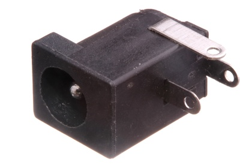
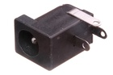
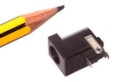

2.1 mm Through Hole DC Jack - DJ21

Summary
Name: 2.1 mm Through Hole DC Jack
ID: DCJP-21D-X-THTH-01
Hex ID: DJ21
WebPage: https://github.com/oomlout/oomlout-OOMP/wiki/DCJP-21D-X-THTH-01
Short URL: http://oom.lt/DJ21
Revision History: https://github.com/oomlout/oomlout-OOMP/blob/master/parts/DCJP-21D-X-THTH-01/
| Type |
Size |
Color |
Description |
Index |
DCJP
DC Jack |
21D
2.1 mm |
X
|
THTH
Through Hole |
01
|
Images


About
A commonly used adapter for connecting DC power to a project. Often reffered to as a barrel jack. It is common (although not always) practice to wire these up centre pin positive.
Common Uses
This part is commonly used as:
*a socket for low voltage DC power.
Specifications
| Info |
Value |
| Type |
DC Jack |
| Size |
2.1 mm |
| Description |
Through Hole |
| Width |
14.2 mm |
| Height |
11 mm |
| Length |
9 mm |
| Number of Pins |
3 |
Extra Details
Spotted a mistake, want to add more? Let us know oomp@oomlout.com
All images and resources are licensed [CC BY-SA] unless otherwise stated (ie. the datasheets)